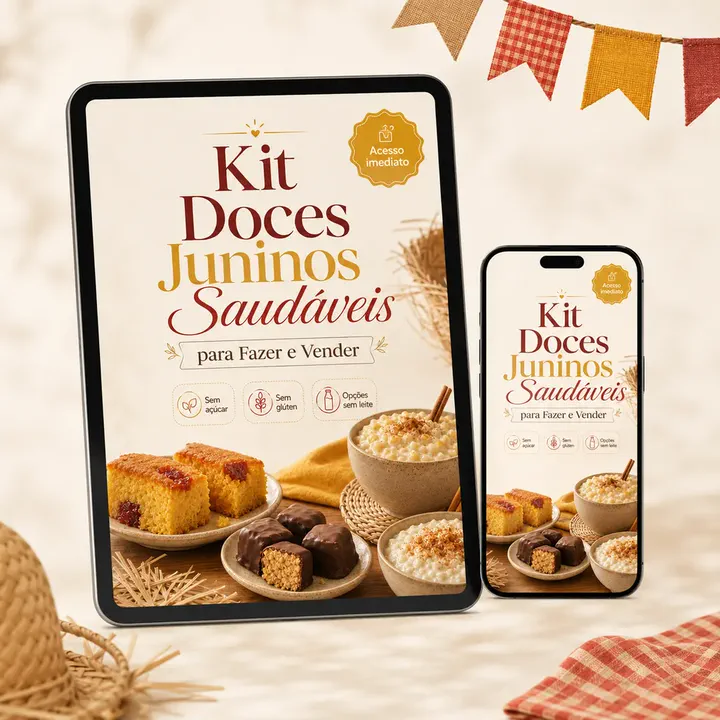
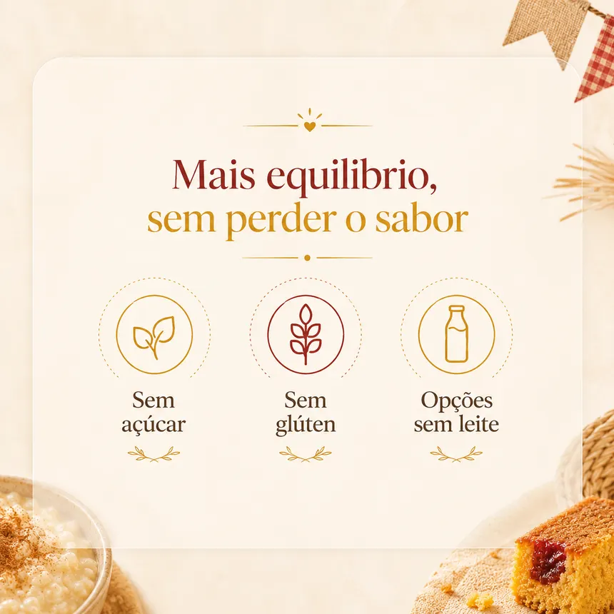
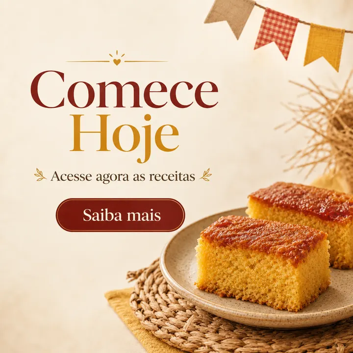

Para quem quer começar do zero
- Fazer doces fáceis, com apelo de Festa Junina
- Vender por encomenda sem precisar de loja física
- Montar combos simples para família, escola e igreja
- Aproveitar a temporada para testar uma renda extra
Receitas fáceis, bonitas e prontas para vender ainda nesta Festa Junina.
Assista primeiro
O que é o pack?
Você recebe um material direto ao ponto, com receitas típicas em versões mais leves e ideias para transformar cada preparo em produto vendável.

Veja antes de levar


Pegada mais leve
A proposta não é vender receita sem graça. É adaptar os clássicos para atender quem procura opções mais leves, práticas e fáceis de divulgar.

ARRAIÁ DE OFERTA • SÓ HOJE
Oferta de temporada
Receitas prontas para preparar, divulgar e vender enquanto a Festa Junina está em alta.
Baixe, escolha as receitas e comece a testar seus doces ainda esta semana.
Avaliações
"Comprei para testar no fim de semana e já montei meu cardápio de encomendas. As receitas são fáceis de entender."
"Gostei porque não fica com cara de dieta. Dá para oferecer como doce junino normal, só que com uma pegada mais leve."
"A parte de preço e divulgação ajuda muito. Eu sempre travava nessa parte antes de oferecer no WhatsApp."
"As ideias de embalagem deixaram tudo com mais cara de presente. Já pensei em montar caixinhas para festa da escola."
"O kit vai direto ao ponto. É bom para quem quer aproveitar junho sem ficar procurando receita solta na internet."
Acessou e não era pra você? Pede o reembolso em até 7 dias e devolvemos 100% do valor. O risco é todo nosso.
100% digital. Você recebe os arquivos em PDF para acessar pelo celular, computador ou imprimir.
Sim. Acessa pelo celular, tablet ou computador e imprime de onde preferir.
Logo após a confirmação do pagamento, o acesso é liberado na hora pelo link de download.
Sim. A ideia é começar simples, com receitas conhecidas e sugestões de apresentação para encomenda.
O foco é em versões mais leves das receitas juninas, incluindo opções sem açúcar, sem glúten e alternativas sem leite de origem animal.
É um complemento opcional com cardápio editável, mensagens prontas para WhatsApp e tabela de precificação por R$ 9,90.
Você tem 7 dias de garantia. Não curtiu, devolvemos seu dinheiro.
Kit Receitas Juninas Lucrativas com acesso imediato por R$ 17,90 — só hoje.
